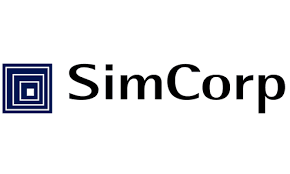
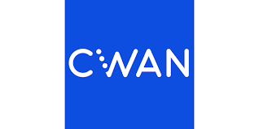
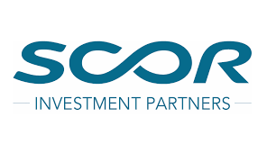
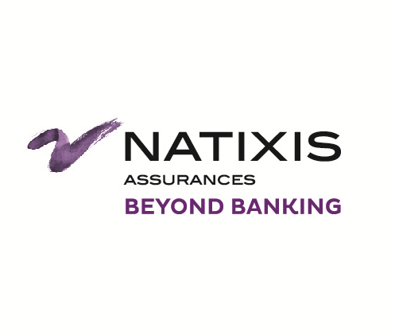
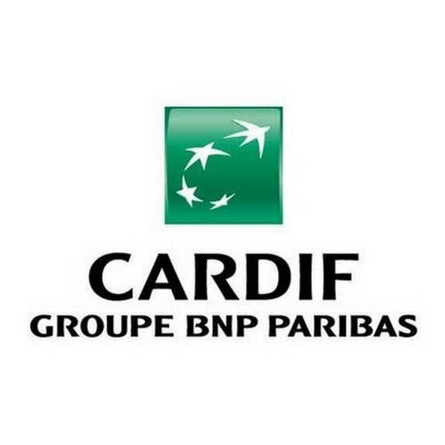
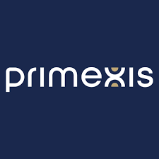
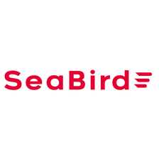
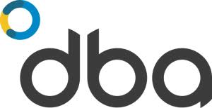
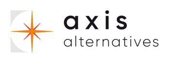
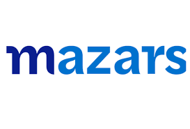

A structurally rare profile combining actuarial expertise, accounting qualification, and 25 years of insurance-specific experience — delivering from regulatory accounting to investment reporting to programme governance.
Years Insurance Expertise
ESCP · Actuarial · Accounting
Bilingual — International
Daily Rate — Available Now
From regulatory transformation to systems implementation — covering both the financial reporting side and the investment and asset management side.
Full-cycle regulatory transformation — gap analysis, technical implementation, and reporting production for insurance and AM firms.
Institutional investment reporting for insurers and asset managers — from portfolio data flows to regulatory and management output.
Hands-on leadership of finance and accounting functions during transformation periods, regulatory deadlines, or organisational transition.
Senior governance for complex multi-workstream transformations — steering committees, milestone tracking, risk management and reporting.
Implementation support and business analysis for investment management platforms — bridging the business and technical divide on complex deployments.
End-to-end finance function redesign — target operating model, process optimisation, and change management for insurers and AM firms.
Vendors, institutions, and consulting firms — each brings a different angle. Together, they form a self-reinforcing network where expertise flows in every direction.










Brought in to support client satisfaction, implementation quality, or technical escalations where deep domain expertise is needed on the ground.
Embedded within the organisation — working alongside leadership to run finance transformation, regulatory change, or critical reporting programmes.
Engaged as specialist subcontractor — providing the deep insurance and finance knowledge that generalist teams need to deliver credibly in this sector.
25 years in insurance from day one of career. Not a generalist who moved into insurance — a specialist who has never left it. That depth means pattern recognition, immediate credibility with technical counterparts, and the ability to move fast without hand-holding.
The combination of ESCP, actuarial training, and accounting qualification is genuinely rare in the market. It translates into full coverage of both the financial reporting side and the investment and asset management side — without needing a second person in the room.
IFRS 17/9 · Solvency II · Statutory reporting (Insurance French GAAP) · Finance transformation · Interim management
Investment reporting · SimCorp · ClearWater Analytics · Portfolio operations · ALM · Front-to-back processes · AI-driven investment reporting
The value of a specialist is only realised when they’re genuinely inside the problem — not advising from a distance. Long-term engagements are where the real outcomes are built.
Typical assignments run 12 to 24+ months. Enough time to earn trust, understand the organisation deeply, and deliver outcomes — not just recommendations.
Structured for remote-first delivery. Open to simultaneous multi-client mandates, with the discipline to manage them without loss of quality or accountability.
No team, no junior relay. You work directly with the specialist. That keeps coordination costs low and accountability high.
Equally effective as the person doing the work or governing it. PMO leadership and interim management are not separate skill sets here.
Whether you’re a CFO preparing for a regulatory deadline, a consulting firm needing a specialist to embed in a client engagement, or a vendor requiring domain expertise on-site — the conversation is always worth having.
Full remote, hybrid, or on-site across France and internationally. Transitioning from an active 18-month engagement.
Open to long-term engagements in insurance, asset management, and finance transformation. Full remote capability. French and English.
Book a Call →